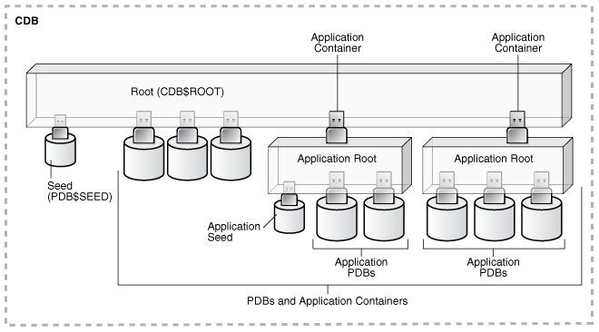

3 Overview of Configuring and Managing a Multitenant Environment
Become familiar with basic concepts related to configuring and managing a multitenant environment.
- About Configuring and Managing a Multitenant Environment
You can use the Oracle Multitenant option to configure and manage a multitenant environment. - Prerequisites for a Multitenant Environment
Prerequisites must be met for a multitenant environment. - Tasks and Tools for a Multitenant Environment
There are common tasks you perform for a multitenant environment, and you use tools to complete the tasks.
Parent topic: Creating and Configuring a Multitenant Environment
About Configuring and Managing a Multitenant Environment
You can use the Oracle Multitenant option to configure and manage a multitenant environment.
You must meet certain prerequisites before configuring and managing a multitenant environment. To do so, you complete some common tasks and use a set of tools to complete those tasks.
The multitenant architecture enables an Oracle database to function as a multitenant container database (CDB) that includes zero, one, or many customer-created pluggable databases (PDBs). A PDB is a portable collection of schemas, schema objects, and nonschema objects that appears to an Oracle Net client as a non-CDB. All Oracle databases before Oracle Database 12c were non-CDBs.
- Common Users and Local Users
A common user is a user that has the same identity in the root and in every existing and future PDB. - Separation of Duties in CDB and PDB Administration
Some database administrators manage an entire CDB, while others manage individual PDBs.
Common Users and Local Users
A common user is a user that has the same identity in the root and in every existing and future PDB.
A common user can log in to the root and any container in which it has been granted CREATE SESSION privilege. The operations that a common user can perform depend on the privileges granted to the common user. Some administrative tasks, such as creating a PDB or unplugging a PDB, must be performed by a common user.
A CDB also supports local users. A local user is a user that exists in exactly one PDB.
See Also:
-
Oracle Database Security Guide for more information about common users and local users
Parent topic: About Configuring and Managing a Multitenant Environment
Separation of Duties in CDB and PDB Administration
Some database administrators manage an entire CDB, while others manage individual PDBs.
DBAs who manage an entire CDB connect to the CDB as common users, and manage attributes of the entire CDB and the root, as well as some attributes of PDBs. For example, these DBAs can create, unplug, plug in, and drop PDBs. They can also specify the temporary tablespace and the default tablespace for the root, and they can change the open mode of PDBs.
DBAs can also connect to a specific PDB as a local PDB administrator and then perform a subset of management tasks on the PDB that a DBA performs on a non-CDB. The subset includes tasks required for the PDB to support an application. For example, tasks can include management of tablespaces and schemas in a PDB, specification of storage parameters for that PDB, changing the open mode of the current PDB, and setting PDB-level initialization parameters.
Parent topic: About Configuring and Managing a Multitenant Environment
Prerequisites for a Multitenant Environment
Prerequisites must be met for a multitenant environment.
The following minimum prerequisites must be met before you can create and use a multitenant environment:
-
You must install or upgrade to Oracle Database 12c or later releases. Oracle Multitenant is not supported in Oracle Database 11g and earlier releases.
The installation includes setting various environment variables unique to your operating system and establishing the directory structure for software and database files.
-
The database compatibility level must be set to
12.0.0or later. -
Sufficient memory must be available to start the Oracle Database instance.
Size the memory required by a CDB to accommodate the workload of each of its containers and the number of containers.
-
Sufficient disk storage space must be available for the planned PDBs on the computer that runs Oracle Database. In an Oracle RAC environment, sufficient shared storage must be available.
The disk storage space required by a CDB is the sum of the space requirements for all PDBs that will reside in the CDB.
These prerequisites are discussed in the Oracle Database Installation Guide or Oracle Grid Infrastructure Installation and Upgrade Guide specific to your operating system. If you use the Oracle Universal Installer, then it will guide you through your installation and provide help in setting environment variables and establishing directory structure and authorizations.
See Also:
-
Oracle Database Installation Guide specific to your operating system
-
Oracle Database Upgrade Guide for information about the database compatibility level
Tasks and Tools for a Multitenant Environment
There are common tasks you perform for a multitenant environment, and you use tools to complete the tasks.
- Tasks for a Multitenant Environment
A multitenant environment enables you to achieve several goals. You can complete general tasks to configure and use a multitenant environment. - Tools for a Multitenant Environment
You can use various tools to configure and administer a multitenant environment.
Tasks for a Multitenant Environment
A multitenant environment enables you to achieve several goals. You can complete general tasks to configure and use a multitenant environment.
These goals are described in "Benefits of the Multitenant Architecture". To do so, you must complete the following general tasks:
- Task 1 Plan for the Multitenant Environment
-
Creating and configuring any database requires careful planning. A CDB requires special considerations. For example, consider the following factors when you plan for a CDB:
-
The number of PDBs that will be plugged into each CDB
-
The resources required to support the planned CDB
-
Container management policies executed as an aggregate on the entire CDB or executed locally on individual PDBs
-
Container database topology, which could consist of application containers with application PDBs or a CDB with PDBs, or a combination of both
See "Planning for CDB Creation" for detailed information about planning for a CDB.
-
- Task 2 Create One or More CDBs
-
When you have completed the necessary planning, you can create one or more CDBs using either the Database Configuration Assistant (DBCA) or the
CREATE DATABASEstatement. In either case, you must specify the configuration details for each CDB.See "About CDB Creation with DBCA" and "Creating a CDB" for detailed information about creating a CDB.
After a CDB is created, it consists of the root and
PDB$SEED, as shown in Figure 3-1. The CDB root contains only Oracle maintained objects and data structures, andPDB$SEEDis a generic seed database for cloning purposes. - Task 3 Optionally, Create Application Containers
-
An application container is an optional component of a CDB that consists of an application root and the application PDBs associated with it. An application container stores data for one or more applications.
The following graphic shows a CDB with one empty application container.
- Task 4 Create, Plug In, and Unplug PDBs
-
PDBs contain user data. After creating a CDB, you can create PDBs, plug unplugged PDBs into it, and unplug PDBs from it whenever necessary. You can unplug a PDB from a CDB and plug this PDB into a different CDB. You might move a PDB from one CDB to another if, for example, you want to move the workload for the PDB from one server to another.
See "Creating and Removing PDBs and Application Containers" for information about creating PDBs, plugging in PDBs, and unplugging PDBs.
Figure 3-3 shows a CDB with several PDBs.
Figure 3-4 shows a CDB with PDBs, application containers, and application PDBs.
Figure 3-4 A CDB with PDBs, Application Containers, and Application PDBs

Description of "Figure 3-4 A CDB with PDBs, Application Containers, and Application PDBs" - Task 5 Administer and Monitor the CDB and Application Containers
-
Administering and monitoring a CDB involves managing the entire CDB, the root, and some attributes of PDBs. Some management tasks are the same for CDBs and non-CDBs, and some are different.
Administering and monitoring an application container is similar to administering and monitoring a CDB, but your actions only affect the application root and the application PDBs that are part of the application container.
See "After Creating a CDB" for descriptions of tasks that are similar and tasks that are different. Also, see "Administering a CDB" and "Monitoring CDBs and PDBs".
You can use Oracle Resource Manager to allocate and manage resources among PDBs hosted in a CDB, and you can use it to allocate and manage resource use among user processes within a PDB. See "Using Oracle Resource Manager for PDBs".
You can also use Oracle Scheduler to schedule jobs in a CDB and in individual PDBs. See "Using Oracle Scheduler with a CDB".
- Task 6 Administer and Monitor PDBs and Application PDBs
-
Administering and monitoring a PDB or an application PDB is similar to administering and monitoring a non-CDB, but there are some differences. See "Administering PDBs" and "Monitoring CDBs and PDBs".
Parent topic: Tasks and Tools for a Multitenant Environment
Tools for a Multitenant Environment
You can use various tools to configure and administer a multitenant environment.
Table 3-1 Tools for a Multitenant Environment
| Tool | Description | See Also |
|---|---|---|
|
SQL*Plus |
SQL*Plus is a command-line tool that enables you to create, manage, and monitor CDBs and PDBs. You use SQL statements and Oracle-supplied PL/SQL packages to complete these tasks in SQL*Plus. |
|
|
Oracle Database Configuration Assistant (DBCA) |
DBCA is a utility with a graphical user interface that enables you to create and duplicate CDBs. It also enables you to create, relocate, clone, plug in, and unplug PDBs. |
Oracle Database 2 Day DBA, Oracle Database Installation Guide, and the DBCA online help |
|
Oracle Enterprise Manager Cloud Control |
Cloud Control is a system management tool with a graphical user interface that enables you to manage and monitor a CDB and its PDBs. |
Cloud Control online help |
|
Oracle SQL Developer |
Oracle SQL Developer is a client application with a graphical user interface that enables you to configure a CDB, create PDBs, plug and unplug PDBs, modify the state of a PDB, clone a PDB to the Oracle Cloud, hot clone/refresh a PDB, relocate a PDB between application roots, and more. Additionally, Oracle SQL Developer has graphical interfaces for resource management, storage, security, configuration, and reporting of performance metrics on containers and pluggable databases in a CDB. |
|
|
The Server Control (SRVCTL) utility |
The SRVCTL utility can create and manage services for PDBs. |
|
|
EM Express |
EM Express is a management and monitoring tool with a graphical user interface which ships with Oracle Database. It can be configured for the CDB, individual hosted PDBs, or both. This tool is intended for PDB administrative use, in the context of the PDB, to manage and monitor application development as an application DBA. |
|
|
Oracle Multitenant Self-Service Provisioning application |
This application enables the self-service provisioning of PDBs. CDB administrators control access to this self-service application and manage quotas on PDBs. |
To access the application, click the Downloads tab, and select Oracle Pluggable Database Self-Service Provisioning application in the Downloads for Oracle Multitenant section. |
Parent topic: Tasks and Tools for a Multitenant Environment